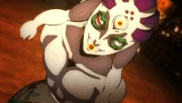
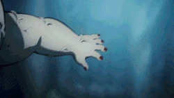

Gyokko quando humano, viveu em uma vila de pescadores, mas não gostava nem um pouco da ideia de ser
pescador.
Ele tinha repulsa a pesca e ao trato de carcaças de peixe.
Os pais de Gyokko um dia foram pescar e simplesmente não voltaram mais, com o passar dos dias, após uma
investigação os corpos deles foram encontrados extremamente danificados e aparentemente afogados.
Gyokko observando aquela cena, despertou um desejo insano em seu subconsciente, a partir daqui ele
passou a ver o sofrimento e a morte como arte.
Algum tempo depois ele matou uma criança da aldeia e enfiou o corpo dela em um frasco.
Os pais da criança resolveram se vingar atacando Gyokko e deixando ele extremamente próximo da morte.
Após horas morrendo aos poucos, Muzan passou pelo local e deu uma nova chance de viver para Gyokko, o
transformando em um oni, que veio a se tornar o Lua Superior 5.

Características Físicas Sobre-Humanas, Amplificação de Status (Demônios ficam mais fortes ao matarem
e absorverem humanos), Regeneração (Rank F), Imortalidade (Tipo 1, 2 e 11), Manipulação Corporal,
Teletransporte, Invocação, Paralisia, Manipulação da Água, Manipulação de Veneno, Manipulação
Material limitada (Tudo que ele toca em sua verdadeira forma é transformado em peixes)
Amplificação de Status
Habilidade que ocorre quando um personagem aumenta seus parâmetros no meio de uma luta, e isso não
está sempre relacionado à sua forma básica ou a algum tipo de "poder oculto" que foi escondido ou
retido.
Regeneração
Capacidade de um ser se restaurar de dano causado a ele, ou de mudança de seu estado físico para seu
estado original. A regeneração é uma habilidade presente em quase tudo no mundo real, e também
extremamente comum na ficção. Existem vários tipos de regeneração, que serão categorizados a seguir.
Invocação
É a habilidade de convocar/fazer aparecer aliados, entidades, coisas, inimigos, itens, ou qualquer
coisa no local desejado, na maioria das vezes espontaneamente. A invocação é uma habilidade bastante
útil, relativamente comum na ficção.
